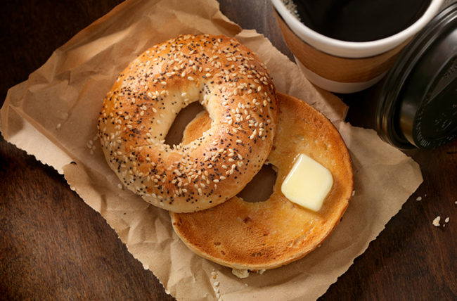

Jack's Secret Bagel Recipe

Description
This recipe has made it much easier for me to get the extra calories I need throughout the day. This can be used all the way from an addition to your breakfast to a midnight snack. The buttery bagel is one of your best friends. To eat.
Ingredients
- Bagel of your choice
- A lot of butter
- Garlic salt (Optional)
Steps
- Pre-heat your oven to 400 degrees fahrenheit
- Cut bagel in half
- Cut up however many tbsps of butter that you want on your bagel (make sure they are 1/4 inch thick)
- Put butter on top of bagel and season it with some garlic salt
- Pop them in the oven for 5 minutes or until butter is melted
- Take them out and enjoy this buttery garlic deliciousness